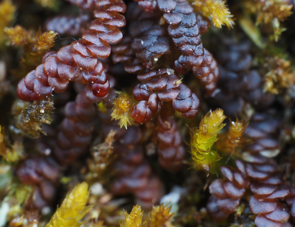

Frullaniaceae
Helmetwort Family
Frullaniaceae is a large, cosmopolitan family of leafy liverworts, dominated by the genus Frullania. Commonly known as helmetworts, they are readily identified by their incubous, complicate-bilobed leaves where the ventral lobule is typically modified into a distinctive helmet-shaped sac (water sac). They also possess characteristic bifid underleaves and are usually found as epiphytes or on rocks.
Overview
The Frullaniaceae, or Helmetwort family, is a major family within the order Porellales, comprising hundreds of species, almost all belonging to the vast genus Frullania. These liverworts are found worldwide, from tropical rainforests to temperate woodlands and even boreal zones, making them one of the most successful and widespread liverwort groups. They are primarily epiphytic, forming closely appressed mats or patches on tree bark and twigs, but also commonly occur on rock surfaces (epilithic).
The family is defined by a unique combination of features within the Porellales. Like their relatives, they possess incubous, complicate-bilobed leaves. However, the ventral lobule is characteristically modified into a helmet-shaped or sac-like structure, often referred to as a water sac, which is thought to function in water retention – crucial for their often exposed epiphytic lifestyle. Accompanying these leaves are distinct underleaves that are typically bifid (divided into two lobes). The plants frequently exhibit reddish-brown or purplish-black pigmentation, especially when growing in sunny locations.
Frullaniaceae represents a significant evolutionary radiation characterized by the specialized helmet-shaped lobule. They are ecologically important as major components of epiphytic communities globally and are often studied for their adaptations to epiphytism and desiccation tolerance.
Quick Facts
- Scientific Name: Frullaniaceae
- Common Name: Helmetwort Family / Frullania Family
- Number of Genera: 1-3 (Frullania dominant)
- Number of Species: Approximately 300-800+
- Distribution: Cosmopolitan (worldwide), diverse in tropics and temperate zones
- Evolutionary Group: Liverworts (Marchantiophyta) - Jungermanniopsida - Porellales - Porellineae
- Key Feature: Incubous complicate-bilobed leaves with helmet-shaped lobules (water sacs), bifid underleaves.
- Habitat Specificity: Primarily epiphytic or epilithic.
Key Characteristics
Gametophyte Form and Habit
Plants are small to medium-sized, occasionally larger, typically forming flat, closely appressed mats or patches adhering tightly to the substrate. Color is highly characteristic, often reddish-brown, purplish-black, or dark olive-green, less commonly bright green. Stems are prostrate, usually regularly 1-2 times pinnately branched (Frullania-type lateral branching).
Leaves and Underleaves
Leaves are arranged incubously and are closely overlapping. They are distinctly complicate-bilobed, divided into a large, typically ovate to orbicular dorsal lobe (often with a rounded apex) and a smaller ventral lobule. The key feature is that the lobule is typically modified into a helmet-shaped or cylindrical sac (water sac), oriented obliquely or parallel to the stem. A small, often filamentous or lanceolate stylus is usually present between the lobule base and the stem. Underleaves are consistently present, usually smaller than the leaves but distinct, and characteristically bifid (divided into two lobes), although the lobes and margins can vary (e.g., toothed, entire).
Rhizoids
Rhizoids are usually colorless or brownish, arising in a tuft from the base of the underleaves.
Cellular Structure
Leaf cells are typically small, isodiametric (polygonal). Cell walls are often thickened, with distinct, often bulging or nodulose trigones. Cell walls and sometimes the entire cell contents are frequently pigmented brown or red. Ocelli (specialized cells containing a single large oil body, appearing as eye-spots) are present in the leaves and underleaves of some species. Oil bodies are typically present, granular or homogeneous.
Asexual Reproduction
Asexual reproduction via gemmae is generally rare or absent, though caducous leaves or branches occur in some species.
Reproductive Structures
Plants are mostly dioicous, sometimes monoicous.
- Antheridia are borne in the axils of saccate bracts on specialized, short, often capitate (head-like) lateral branches.
- Archegonia are terminal on short lateral branches, surrounded by 2-5 pairs of bracts and bracteoles that are usually larger and sometimes differently shaped than vegetative leaves/underleaves.
- A prominent perianth is present, typically exserted. It is characteristically pyriform (pear-shaped) to oblong, sharply 3-keeled (trigonous), sometimes with additional smaller folds (plicate), and abruptly contracted to a distinct tubular beak or rostrum at the mouth. Marsupia are absent.
Sporophytes and Spores
The sporophyte develops within the perianth. The seta is short and thick, elongating rapidly via a unique explosive cell elongation mechanism just before spore release. The capsule is spherical, dark, splitting into four valves that often recurve. The capsule wall is typically composed of two layers of cells. Spores are large; elaters are typically attached to the inner capsule wall and valve surfaces.
Field Identification
Identifying Frullaniaceae involves looking for often dark-colored, appressed mats on bark or rock and observing the unique helmet-shaped lobules and bifid underleaves, usually requiring a hand lens.
Primary Identification Features
- Habit: Flat mats closely appressed to bark or rock, often reddish-brown or purplish-black.
- Leaves: Incubous arrangement; complicate-bilobed with a large dorsal lobe and a ventral lobule modified into a helmet-shaped or saccate structure (water sac).
- Underleaves: Consistently present, distinct, typically bifid (2-lobed).
- Perianth (if fertile): Prominent, 3-keeled (trigonous), with a distinct apical beak.
- Habitat: Primarily epiphytic or epilithic.
Secondary Identification Features
- Branching: Usually regularly pinnate.
- Stylus: Small appendage often visible between lobule and stem (use lens).
- Ocelli: Eye-spot like cells present in leaves/underleaves of some species (use lens/microscope).
- Gemmae: Usually absent.
Seasonal Identification Tips
Frullaniaceae gametophytes are perennial and readily visible year-round:
- Year-Round: The characteristic leaf lobules and bifid underleaves are constant features. Color may vary with moisture and light.
- Reproduction: Perianths are often persistent and conspicuous on female plants. Sporophytes are less commonly seen but capsule dehiscence can be rapid.
Common Confusion Points
Distinguishing Frullaniaceae from other Porellales requires careful examination of the lobule and underleaf:
- Jubulaceae (Jubula): Very similar (sister family), also has helmet-shaped lobules and bifid underleaves. Differs in subtle details like perianth structure (often lacks strong beak) and sporophyte features.
- Lejeuneaceae: A huge family, many also have complicate-bilobed leaves with saccate/inflated lobules and bifid underleaves. Lejeuneaceae are often smaller, greener, cells may differ, perianth shape varies (often 5-keeled or smooth, less often strongly trigonous with beak). Requires careful comparison.
- Porellaceae (Porella): Has complicate-bilobed leaves, but lobules are flat (not helmet-shaped), and underleaves are large and undivided.
- Radulaceae (Radula): Has complicate-bilobed leaves, but completely lacks underleaves.
Field Guide Quick Reference
Look For:
- Flat mats on bark/rock, often dark/reddish
- Leaves incubous, complicate-bilobed
- Lobule modified into helmet-shaped sac
- Underleaves present, bifid (2-lobed)
- Perianth 3-keeled, beaked (if fertile)
- Gemmae usually absent
Key Distinctions:
- Helmet lobule + Bifid underleaf
- Lobule helmet-shaped (vs. flat in Porella, variable in Lejeunea)
- Underleaves bifid (vs. undivided in Porella, absent in Radula)
- Perianth trigonous, beaked (vs. often different in Lejeunea)
Notable Examples
The family is dominated by the very large genus Frullania:

Frullania dilatata
Dilated Scalewort
A very common species in temperate Europe and surrounding regions, typically forming dark reddish-brown to blackish patches on tree bark, especially deciduous trees like oak and beech. Shows the characteristic helmet lobules, bifid underleaves, and trigonous perianths. Dioicous.

Frullania tamarisci
Tamarisk Scalewort
Another widespread and variable species, common in temperate Northern Hemisphere and extending southwards, found on bark and rocks. Often robust, reddish-brown to dark green. Distinguished by features like chains of ocelli (specialized cells) in the leaves. Dioicous.

Frullania eboracensis
New York Scalewort
A common species in eastern North America, typically found on tree bark. Often forms neat, dark patches. Monoicous, often fertile with perianths present. Lobules are typically helmet-shaped.
Phylogeny and Classification
Frullaniaceae is classified within the liverwort division Marchantiophyta, class Jungermanniopsida, order Porellales, and suborder Porellineae. It represents one of the major families within this suborder, characterized by the highly specialized helmet-shaped ventral leaf lobules.
Molecular phylogenetic studies consistently show Frullaniaceae as a monophyletic group (or largely so, depending on recognition of smaller genera like Schusterella). It is considered the sister group to Jubulaceae, another family with similar helmet-shaped lobules but differing in other morphological details. Together, Frullaniaceae and Jubulaceae form a distinct clade within the Porellineae, highlighting the successful evolution of this particular type of water-sac structure.
Position in Plant Phylogeny
- Kingdom: Plantae
- Clade: Embryophytes (Land Plants)
- Division: Marchantiophyta (Liverworts)
- Class: Jungermanniopsida
- Order: Porellales
- Suborder: Porellineae
- Family: Frullaniaceae
Evolutionary Significance
Frullaniaceae is significant for:
- Helmet-shaped Lobules: Represents the primary evolutionary radiation of liverworts utilizing this specific type of water-sac structure, likely key to their success in epiphytic niches.
- Global Diversification: The genus Frullania is exceptionally species-rich and globally distributed, indicating high evolutionary success and adaptability.
- Epiphytism: A major component of epiphytic bryophyte communities worldwide, playing roles in water retention and nutrient cycling on bark surfaces.
- Model System: Used in studies of desiccation tolerance, secondary chemistry (some species cause contact dermatitis), and bryophyte systematics.